2006年08月14日 文責：浅岡 浩子
もくじ：
| ピックボタン | ||||
| グラブボタン | ||||
| 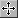 | ドラッグボタン | |||
| Ｘホィール | 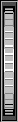 | Ｚホィール | ||
| フォーカスボタン | ||||
| 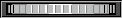 | ||||
| Ｙホィール | ||||
（ビューアによっては、上記のように配置されていない場合があります。）
ビューアのウィンドウに配置されているボタンやホィールを利用して、 ビューア内の表示されているものの回転、拡大・縮小、平行移動などを行うことができます。
ボタンの機能を利用する場合は、ボタンを押して、選択されている状態にしてから、ビューア内で操作します。
ここでは、基本的なボタンやホィールの解説をします。
ボタンやホィールは、ウィンドウ内に配置されています。
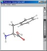 ex. 分子ビューアのウィンドウ
ウィンドウの右側に配置されているのが、 最も基本的なボタンやホィールです。
さらに別のホィールが配置されている場合もあります。
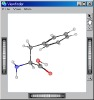 ex. ビューファインダのウィンドウ
他にもビューアに特化したボタンが配置されている場合があります。
詳細はそれぞれのマニュアルを参照してください。
表示されているものを選択します。
ボタンを押して、 表示物のある場所をクリックすると、選択可能な領域を選択します。
「Shift」キーを押しながらクリックすると、複数の領域を選択します。
選択を解除する場合は、何もない白い部分でクリックします。
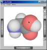 --- Click ---> 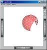 領域選択状態
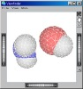 [Shift] + Click で複数領域選択
表示されているものを回転します。
ボタンを押すと、 カーソルが 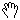 (hand) の形になります。
画面内をドラッグすると、画面の中心を軸にして回転します。
--- Drag ---> 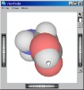
表示されているもの全体を平行移動します。
ボタンを押すと、 カーソルが 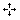 (quarters) の形になります。
画面内をドラッグすると、表示されているものが平行移動します。
--- Drag ---> 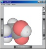
ウィンドウ右側に配置されているホィールです。
Ｚホィールをまわすと、拡大・縮小して表示します。
Ｚホィール上へマウスカーソルを持っていくと、 カーソルが 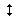 (upDown) の形になります。
Ｚホィールの上でドラッグして操作します。
Ｚホィールを上方向へ回すと縮小、下方向へ回すと拡大します。
「Shift」キーを押しながらドラッグすると、緩やかに拡大・縮小します。
| 動作 | Ｚホィールを回す向き |
|---|---|
| 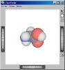 縮小 |
↑ 上方向 |
| 最初の状態 | |
| 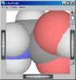 拡大 |
下方向 ↓ |
ボタンを押すと、 カーソルが 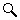 (glass) の形になります。
クリックでその辺りを中心にして拡大します。
[Shift]キーを同時に押すと、縮小になります。
ドラッグして領域を選択すると、その領域で拡大・縮小表示します。
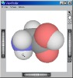 --- Click ---> 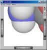
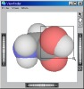 --- Drag ---> 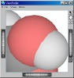
ウィンドウ右側に配置されているホィールです。
Ｘホィールをまわすと、表示されているものを回転します。
（ただし、ビューアによっては、他のボタンが押されている状態で、動作が変わる場合があります。）
Ｘホィール上へマウスカーソルを持っていくと、 カーソルが (upDown) の形になります。
Ｘホィールの上でドラッグして操作します。
Ｘホィールを回す方向へ表示されているものが回転します。
「Shift」キーを押しながらドラッグすると、緩やかに回転します。
| Ｘホィールを回す向き | 動作 |
|---|---|
|
↑ 上方向 |
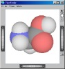 上へ回転 |
| 最初の状態 | |
|
下方向 ↓ |
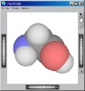 下へ回転 |
ウィンドウ下側に配置されているホィールです。
Ｙホィールをまわすと、表示されているものを回転します。
Ｙホィール上へマウスカーソルを持っていくと、 カーソルが 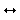 (between) の形になります。
Ｙホィールの上でドラッグして操作します。
Ｙホィールを回す方向へ表示されているものが回転します。
「Shift」キーを押しながらドラッグすると、緩やかに回転します。
| 動作 | 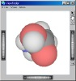 左へ回転 |
最初の状態 |
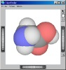 右へ回転 |
|---|---|---|---|
| Ｙホィールを回す向き |
← 左方向 |
右方向 → |
{kind=link}
{kind=link}
{kind=link}
{kind=link}
{kind=link}
{kind=link}
{kind=link}
{kind=link}
{kind=link}
{kind=link}
{kind=link}
{kind=link}
{kind=link}
{kind=link}
{kind=link}
{kind=link}
{kind=link}
{kind=link}
{kind=link}
{kind=link}
{kind=link}